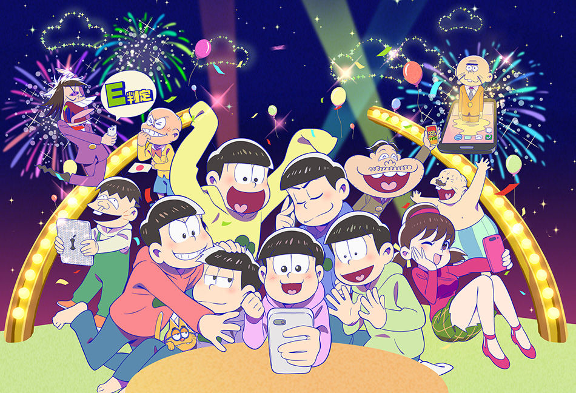

おそ松さん
あらすじ
松野家の六つ子、おそ松、カラ松、チョロ松、一松、十四松、トド松は
20歳を過ぎても定職につかず、親の脛をかじるいわゆるニート。仕事にも
女性にも縁がない個性的な6人は、時に足の引っ張り合いをしながらも、
ひとつ屋根の下で暮らし、それぞれの趣味にいそしむ日々。そんな彼達に、
うさんくさい男イヤミ、おでん屋のチビ太、六つ子のアイドル的存在トト子、
いつもパンツ一丁のおじさんデカパン、大きな口の中年男ダヨーン、
あどけない少年（に見えるが実は成人）ハタ坊などの面々が加わり毎回騒動が巻き起こる。
